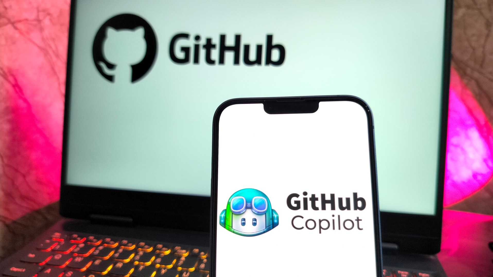

GitHub Copilot agora prevê bugs no planejamento
A versão "Quantum" usa IA preditiva para avisar sobre erros de lógica antes mesmo de o desenvolvedor abrir o editor de código.
Por Redação Tech Paper
O futuro da programação acaba de dar um salto quântico — literalmente. A Microsoft e o GitHub anunciaram hoje o Copilot Quantum, a mais nova evolução da sua popular inteligência artificial para desenvolvedores. Se antes a ferramenta era elogiada por autocompletar blocos de código com maestria, agora ela promete resolver o maior pesadelo da engenharia de software: falhas na lógica de negócio e na arquitetura antes mesmo de o projeto começar a ser codificado.
Lendo a mente (e os tickets) do projeto
A grande inovação do modelo Quantum é a sua capacidade de se integrar ativamente ao ecossistema de planejamento da equipe. Ao conectar a IA a plataformas de gestão como Jira, Trello ou Azure DevOps, o Copilot analisa a descrição da tarefa, os requisitos do sistema e o histórico de repositórios da empresa.
Com base nisso, ele cruza os dados e emite um alerta se a abordagem que a equipe está planejando tem potencial para gerar um vazamento de memória (memory leak), um gargalo no banco de dados ou uma vulnerabilidade de segurança, tudo isso dias antes do primeiro commit.

Imagem Github Copilot
Imagem tirada de https://itdaily.be
O fim do "Bug de Sexta-feira"
"O código mais seguro é aquele que nunca precisou ser reescrito", afirmou Thomas Dohmke, CEO do GitHub, durante a apresentação virtual. O conceito, conhecido na indústria como Shift-Left (trazer os testes e a prevenção para a fase mais inicial possível do desenvolvimento), atinge seu ápice com a versão Quantum.
A promessa do GitHub é reduzir o tempo gasto com debugging corretivo em até 70%. O objetivo é permitir que os engenheiros foquem na solução criativa de problemas, em vez de passar madrugadas caçando falhas de arquitetura complexas que poderiam ter sido evitadas no momento da concepção da ideia.
Thomas Dohmke - CEO do GitHub
Imagem tirada de https://www.spiegel.de/netzwelt
A IA vai substituir o Arquiteto de Software?
Apesar do entusiasmo geral do mercado, o anúncio levantou debates imediatos em fóruns e comunidades de tecnologia: estaria o Copilot Quantum assumindo o papel de um Arquiteto de Software ou de um Desenvolvedor Sênior?
O GitHub garante que a resposta é "não". A ferramenta foi desenhada para atuar como um "validador de arquitetura", apontando os pontos cegos humanos baseando-se em trilhões de linhas de código analisadas, mas ainda exigindo o julgamento crítico de um profissional para decidir qual caminho técnico seguir. De qualquer forma, a barra de exigência para a qualidade do software acaba de subir. Escrever código que já nasce com defeitos de lógica pode, muito em breve, se tornar uma prática do passado.